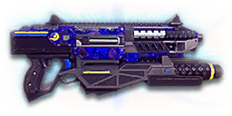

← Back to the 19A Fortuna comparison
Sage Guide · New Conglomerate · Light Assault / Engineer
The reward for completing the Master Carbines directive: the AF-19 Mercenary you already know, with a laser sight built into its hipfire, an Impulse Launcher under the barrel, and slower bullets as the price. You earned it with five auraxium medals — this page teaches you to fight with it.
The one-line verdict: statistically the same gun as the Mercenary — 167 damage, 600 RPM, a 0.50-second chest kill up close — with the tightest hipfire of any NC carbine and a knockback grenade under the barrel. Its price is 450 m/s bullets and a rail slot that forces a choice: Forward Grip or Impulse Launcher, never both.

The 19A Fortuna · New Conglomerate · 30-round magazine · Master Carbines directive reward
Every enemy infantry has 1,000 health (500 shield + 500 health). Your bullet does 167 damage up close, fading to 125 at long range. Headshots count double, leg shots count less (×0.9). That gives you three numbers worth memorising:
| Range | Damage | Head | Chest | Legs | Chest vs shielded Heavy |
|---|---|---|---|---|---|
| Close · 0–10 m | 167 | 3 | 6 | 7 | 9 |
| Mid · 10–44 m | 167→143 | 4 | 7 | 8 | 11 |
| Far · 44–70 m+ | 143→125 | 4 | 8 | 9 | 12 |
Perfect-accuracy times to kill: 3 headshots ≈ 0.20 s, 6 chest shots ≈ 0.50 s up close. In real fights you'll land maybe half your rounds — still, this is why the head matters so much on this gun. Maximum damage per second is 1,670. The breakpoints are exact: 6 chest shots to 10.5 m, 7 to 44.3 m, 8 past that.
Full power to 10 m, then a steady slide to minimum at 70 m. The gold line shows Soft Point Ammunition, which stretches full power to 15 m.
The honest framing, since you already know the gun this is built from: the Fortuna is the AF-19 Mercenary, statistically — same 167→125 damage, same 600 RPM, same 0.50-second chest kill up close, same recoil. What five auraxium medals bought you is the trim: a laser sight built into the hipfire (your standing hip cone is 1.0°, the Mercenary's is 1.5°), an Impulse Launcher under the barrel, and slower bullets as the price — 450 m/s against the Mercenary's 500. Everything on this page is about spending that trim well.
One gun, four fighting styles. The right technique changes with distance — use the range finder below to see what your bullets do at any range, then learn the four bands underneath it.
How to fight hereAim down sights at the upper chest and neck. Fire in bursts of 5–8 — your recoil climbs straight up into the head for free damage.
Aim: centre of the chest, from the hip. Keep moving.
Scoping in costs you time and halves your move speed — at arm's length that gets you killed. Your standing hipfire cone is 1.0° (the 0.14 m ring at 8 m in section 04), tighter than the Mercenary's thanks to the built-in laser sight. Strafe side to side (A/D) while firing so you're hard to track, and let your movement do the defending — as a Light Assault your jump jets are the escape plan, as an Engineer it's the corner you already picked.
Aim: neck / upper chest. Bursts of 5–8 rounds.
This is where the gun earns its keep: full 167 damage, fast handling, and a 0.50 s chest kill. Start your crosshair at the neck — the recoil climbs straight up, so it walks your shots into the head, and 3 head hits end the fight in a fifth of a second. Strafe while scoped; you're slower, but a moving target still beats a still one.
Aim: chest. Bursts of 5–8 rounds, pause between them.
Damage is sliding toward 125 and your cone of fire blooms if you hold the trigger. Fire a burst, release for a split second to let accuracy reset, fire again. The recoil is a straight vertical climb (angle 0°), so pull your mouse gently down — no sideways correction needed, just fight the climb. Crouch or stand still when you can — both tighten your shots. And start leading your targets: at 450 m/s a bullet takes a tenth of a second to cross 50 m, and a running enemy moves about half a metre in that time.
Aim: chest. Taps of 3–5 rounds at exposed targets only.
At 125 damage you need 8 chest shots — a long, loud advertisement of your position. Take these shots at stationary or fleeing targets, medics reviving, and engineers on turrets. Otherwise, your better play is to close the distance behind cover — as a Light Assault, over the roof; as an Engineer, from one piece of cover to the next. Knowing when not to shoot is a skill too.
Your accuracy is decided by two things before skill even enters it: what your body is doing (your stance sets the starting cone of fire) and what your finger is doing (holding the trigger grows that cone with every shot). The Fortuna has no fire-mode switch — full-auto only, the semi-auto mode was removed in the 2022 Arsenal Update — so "firing modes" are something you do with your finger, not a setting on the gun. And then there is the third thing no other NC carbine has: the built-in laser sight and the Impulse Launcher.
| Stance | Starting cone | What it means for you |
|---|---|---|
| Sprinting | 7.0° | Maxed out — the widest the cone can be. Never start firing from a sprint. |
| Hipfire, moving | 1.34° | Walking or strafing from the hip. The 0.19 m ring at 8 m in section 04 is this stance drawn out — still inside the chest, which is why hipfire works farther on this gun than on the Mercenary. |
| Hipfire, standing | 1.0° | Your point-blank default. The 0.14 m ring at 8 m in section 04 is this stance drawn out. A third tighter than the Mercenary's 1.5° — the built-in laser sight, already counted in these numbers. |
| Hipfire, crouched | 0.67° | The tightest hipfire you have (1.0° if you crouch-walk) — a 0.09 m ring at 8 m. Crouch when holding a doorway from the hip. |
| Aimed (ADS), feet planted | 0.03° | 33 times tighter than hipfire standing. |
| Aimed (ADS), crouched | 0.03° | Same as standing — crouching buys you nothing aimed. Crouch-walking is 0.15°, still excellent. |
| Aimed (ADS), strafing | 0.30° | Ten times wider than planted, and you move at half speed (0.5×). Strafe between bursts to stay hard to hit; plant your feet during each burst. |
| Mode | How your finger does it | Use it at |
|---|---|---|
| The mag dump | Hold the trigger and don't let go | Point blank only, or suppressing a doorway. Bloom maxes out fast — past ~8 rounds you're spraying, not aiming — and you'll burn the whole 30-round magazine in 2.9 seconds. |
| Bursts — the default | Hold for 5 rounds, release ~0.15 s, hold again. 6–8 rounds is fine while you're learning | Almost everything, 8–50 m. Each release resets the cone, so every burst starts at 0.03°. |
| Tap-fire | Short taps of 3–5, or single clicks, with a real pause between | 50 m and out, at exposed or stationary targets. Slow, but every round goes where the dot is. |
Two things about the cone that veterans get wrong. First, the cone grows by the bloom per shot from shot 1 — 0.06° per aimed shot, 0.12° from the hip. There is no bloom freeze and no free shots: the first shot already widens the cone for the second. Second, the ADAD window is 4 aimed shots (2 from the hip) — not free shots either, but a movement window: standing still, your first 4 aimed shots grow the cone to 0.27°, still just under the 0.30° strafing floor, so starting to strafe then costs nothing; the 5th shot pushes it to 0.33°, past the floor. From the hip it's the same shape at 2 shots (1.24° vs the 1.34° moving floor). The window is about your feet, not your gun — fire the first shots planted, then move between bursts.
Aimed bloom caps at a 3.0° cone — and at 0.06° per shot you'd need 50 shots to reach it, more than the 30-round magazine holds, so you cannot max out the aimed cone in one magazine. Hipfire bloom caps at 7.0°, also 50 shots away. Horizontal recoil is 0.175° per shot with a 0.45° tolerance, the recoil angle is 0°/0°, and recovery runs at 18°/s — the sideways jitter is small and directionless, which is why the climb reads as straight up and fades fast between bursts. The first shot kicks 1.75× as hard as the rest, on top of 0.40° vertical recoil per shot — a 0.70° first hop, so your second shot is the one that needs the pull-down.
Here is what makes the Fortuna different from the Mercenary it is built from. Under the barrel sits a built-in Impulse Launcher: press the Gear Slot 1 key (1 by default) to swap to it, and it fires a non-lethal grenade that knocks back you and any enemy infantry it hits. It costs you 0.25 seconds of equip time just for being attached — and it occupies the rail slot, so fitting a Forward Grip, an Extended Magazine or any other rail attachment removes it. That choice is the real build decision on this gun, and section 06 prices both sides of it.
Knocking an enemy off a capture point, off a ledge, or out of a doorway — and knocking yourself around, too. Fire it at your own feet and the blast throws you: Light Assaults use it for an extra hop onto roofs and ledges the jump jets alone won't reach, and any class can use it to break out of a bad corner. It deals no damage, so it never finishes a fight — it moves one.
30 rounds is 5 kills at perfect accuracy up close (6 shots each), 4 at mid range, 3 far — realistically 2–3 with misses. That is the gun's whole economy: never dump a magazine on one doorway, and never let the last 10 rounds be the ones you need. Reload behind cover — 1.8 seconds with rounds left, 2.75 seconds on empty — and treat the Impulse Launcher as your escape tool, not your damage.
A target 30 m away, aiming down sights. Press and hold FIRE (mouse, touch, or hold Space with the button focused) and watch the holes walk wider the longer you hold — that's firing from an ever-growing cone. Release, let the cone reset, fire again. Aim for bursts of 5; 6–8 is tolerable while you're new. This practice window is shared by the whole Sage series: it's driven by a weapon profile plugged into the window — here the Fortuna's (600 RPM, 0.03° starting cone, 0.06° bloom per shot, target at 30 m) — and the spread is drawn at true scale from those numbers.
Cone of fire — fills as you hold, empties when you release. The cone grows from the very first shot; the first 4 still shots are only "free" in the sense of the ADAD note above — they cost nothing when you start strafing, not because bloom pauses.
Your bursts will be graded here — green at 5 rounds, tolerable up to 8.
Some things are easier to show than to say. Here's what your bullets actually do: how wide hipfire spreads at 8 metres, what a good burst rhythm looks like, and what the 2x sight really changes. The hands-on version — holding the trigger yourself — is the practice window in section 03.
A full-size target 8 m away — an arm's-length room fight. The rings show where hipfire rounds land around your aim point (the chest). Sizes are drawn to scale from the gun's real cone-of-fire numbers.
Read it this way: standing still, the 0.14 m ring sits well inside the chest — most rounds hit a target this size, which is why hipfire works point-blank. But the real story is the grey ring: your moving ring (0.19 m) is tighter than the Mercenary's standing ring (0.21 m) — the built-in laser sight buys you a whole stance of accuracy. The rings only grow with distance while the man doesn't: your moving ring reaches torso width (~0.45 m) at about 19 m, standing at about 26 m. Past that, switch to aiming down sights, where the spread shrinks to a dot. (Ring sizes use the real geometry: spread diameter = 2 × distance × tan(cone ÷ 2).)
Every shot widens your cone of fire ("bloom"). Releasing the trigger for a heartbeat resets it. Same 18 rounds, two very different outcomes:
The target pattern is bursts of about 5 rounds — that's the ideal. Bursts of 6–8 are fine while you're new (call it newbie tolerance). Past that, the bloom (0.06° per shot aimed, 0.12° from the hip) keeps growing with every shot, so the extra bullets mostly decorate the wall behind your enemy instead of hitting him. Short bursts also leave you rounds for the second enemy — remember, the magazine is only 30 rounds, and 18 rounds is 60% of it.
No zoom. The target at 35 m is small but the view is wide open — you see the crate, the tower, and the next enemy coming. Fast to aim, nothing blocks your edges. Best inside ~40 m.
Same target, same 35 m — but he looks twice as tall, so placing shots on his chest and head gets much easier. The price: your view narrows to the round window, the crate and tower are gone, and close targets feel fast and huge. Best at 25–50 m.
That's the whole 30-cert decision from section 05 in one picture: 1x for awareness, 2x for precision. Both sights cost 30 certs. Most veterans carry both and swap per base — indoors 1x, open ground 2x.
Old guides will tell you directive weapons take no attachments. That was true before the March 2022 Arsenal Update — it isn't anymore. The Fortuna takes attachments in every slot: optics, barrel, rail and ammo. Two things are already built in and can't be bought or removed: the laser sight (its benefit is already in your hipfire numbers — 1.0° standing instead of the Mercenary's 1.5°) and the Impulse Launcher on the rail. Everything below is an optional sidegrade, not an upgrade. Buy in the order shown and stop whenever the gun feels right. Two things that don't exist for this gun at all: there is no Darklight Flashlight and no Angled Forward Grip — and no laser sight to buy, because you already have one.
Plain front and back posts. What the directive hands you — usable, but a dot sight is a real upgrade for 30 certs.
Good: your first fights with the gun, while you decide which sight you like.
Bad: as a permanent choice — the posts are slower to read than a dot at every range.
A clean NC reflex sight with no zoom: a red dot above the top rail. Your default sight in practice, and honestly your best all-round option.
Good: everywhere indoors and out to ~40 m — which is most PlanetSide fights.
Bad: picking out targets past 50 m; that's what the 2x is for.
Doubles your view magnification with a simple dot reticle. Same price as the 1x — the cheapest meaningful choice on this page.
Good: open-field bases, tower fights, and your 25–50 m burst game. Swap between 1x and 2x per fight.
Bad: tight indoor rooms — the zoom makes close targets feel fast and huge.
Night-vision sight: enemies glow white against a dark view, and it sees through smoke.
Good: night fights, smoky doorways, spotting infiltrators by their outline.
Bad: daytime and long range — its view is short-ranged and washes out in bright light.
LX Tacti-Eye / LACO (3.4x) and TrueShot / LX Mark IV (4x) — sniper-style magnification on an automatic carbine.
Good: almost nothing this gun does — recoil magnifies too, and tunnels your vision.
Bad: any fight inside 40 m, which is where you'll spend your time with a carbine.
The Fortuna's recoil is a straight-up climb with no sideways drift, and every barrel here charges a real price for its benefit. Plenty of veterans run this slot empty forever.
Good: your first fights. Spend certs on your sight, grip and ammo first.
Bad: nothing — there's no downside to an empty slot.
Cuts vertical recoil by 30% (0.40° → 0.28° per shot). Costs you: hipfire spread grows 15%, and enemies see you on the minimap from 35 m farther away when you fire.
Good: long aimed bursts at 25–50 m, where the climb is the whole fight and you weren't hipfiring anyway.
Bad: close-quarters builds — it taxes exactly the hipfire this gun is built for, and advertises you.
Your shots bloom 20% slower while aiming (0.06° → 0.048° per shot) — longer accurate bursts. But you move 20% slower while scoped (0.5× → 0.4×).
Good: the long-lane build in section 06 — planted, aimed, bursting at 40 m and out.
Bad: mobile play — the ADS speed penalty stacks on an already slow 0.5× strafe.
Hipfire bloom grows 40% slower (0.12° → 0.072° per shot) — much steadier hip spraying. But vertical recoil rises 20% when you do aim (0.40° → 0.48° per shot).
Good: a dedicated close-quarters build that lives on hipfire inside 15 m.
Bad: general play — it taxes the aimed shooting you'll do most.
No muzzle flash, no firing noise, and you stay off the minimap when you shoot. In exchange, damage falls off 20 m sooner (minimum damage at 50 m instead of 70 m) and bullets fly 15% slower (450 → 383 m/s).
Good: flanking as a Light Assault, where staying off the map matters more than the range you lose.
Bad: open fights past 40 m — the velocity and falloff penalties stack on the gun's weakest area.
Hides your muzzle flash so your own view stays clear at night — but you appear on enemy minimaps from 15 m farther away when you fire.
Good: night fights where your own flash blinds you. A comfort pick, nothing more.
Bad: as an early purchase — it changes no fight outcome. Buy it last, if ever.
The default rail attachment — it's fitted unless you choose something else for the slot. Fires a non-lethal knockback grenade (Gear Slot 1), and adds 0.25 s to your equip time.
Good: shoving enemies off points and ledges, and the self-boost hop in section 03. Free, and already yours.
Bad: nothing on its own — but keeping it means giving up the Forward Grip or the Extended Magazine below.
Cuts side-to-side recoil by 25% (0.175° → 0.131° per shot), keeping your bursts on a single target. Tiny cost: weapon swap is 0.15 s slower. Removes the Impulse Launcher.
Good: the default for aimed, mid-range play — leave it on until you deliberately build around the launcher instead.
Bad: nothing meaningful for accuracy. It only costs you the launcher, so weigh that trade, don't ignore it.
Five more rounds per magazine (30 → 35) — one more kill per mag at perfect accuracy at mid and long range. Costs 15% slower equip and unequip. Removes the Impulse Launcher.
Good: sustained point holds where the reload is the dangerous moment, and multi-kill chains as a Light Assault.
Bad: if you lean on the launcher for movement or escapes — five rounds don't replace a knockback.
A single-shot shotgun round under the barrel (Gear Slot 1), for the enemy who rounds the corner inside arm's reach. Adds 0.25 s to equip time. Removes the Impulse Launcher.
Good: point-blank ambushes where one extra burst of damage ends the fight before it starts.
Bad: as a general pick — one shot, then a long switch back, and you've traded away the launcher for it.
Underbarrel smoke grenade launcher (Gear Slot 1) — a wall of smoke on demand. Adds 0.25 s to equip time. Removes the Impulse Launcher.
Good: covering a revive, a retreat, or a point push with your squad behind the smoke.
Bad: solo play — smoke helps the squad, and it blinds you exactly as much as the enemy.
Full 167 damage now reaches to 15 m instead of 10 m (the gold line on the chart in section 01 — your 7-shot kill stretches to 46.4 m). Cost: bullets fly 10% slower (450 → 405 m/s).
Good: nearly always — most duels happen at 10–20 m, exactly where this extends your 6-shot / 3-headshot kill.
Bad: long lanes, where the velocity penalty is the one thing you can't afford to pay.
Bullets fly 10% faster (450 → 495 m/s) and minimum damage stretches to 90 m — but full damage ends at 8 m instead of 10 m, and your 7-shot kill ends at 54.9 m.
Good: the long-lane build — open ground, where leading a target at 450 m/s is the real tax.
Bad: close fights — you give up 2 m of full damage for velocity you don't need at 15 m.
Four setups, one decision running through all of them: the rail slot holds either a grip or a magazine or the Impulse Launcher — never two. Pick the setup whose trade you actually want.
0 certs · Impulse Launcher kept
What the directive hands you. Bare — but the gun underneath is already the Mercenary with a laser sight and a knockback grenade. Learn the launcher on this before spending anything.
230 certs · Recommended · Launcher traded away
The best value in this whole guide. Covers every fight from a doorway to a tower courtyard — at the price of the Impulse Launcher, which the Forward Grip replaces. If you miss the knockback, that's what the next setup is for.
330 certs · Launcher traded away
Built to hipfire down stairwells and hold a capture point room: 35 rounds, slower hip bloom, full damage to 15 m. Swap back to the All-Rounder outdoors — the Short Barrel taxes every aimed shot.
230 certs · Impulse Launcher kept
For tower fights and open ground: faster bullets (495 m/s), a steadier first shot, and a zoomed view for 40–60 m taps — and the launcher stays, as your escape tool. Weak up close — so don't fight up close.
Your damage, accuracy and velocity all shine at close-mid range. As a Light Assault, arrive over the roof; as an Engineer, move cover to cover. The player who chooses the range usually wins the duel — make it you, and make it inside 40 metres.
Headshots deal double damage: 3 kills up close versus 6 to the chest. Don't aim at the head directly — aim at the neck and let the gun's natural upward climb carry shots two and three into the skull. It's the single biggest damage upgrade you own, and it's free.
Every shot widens your cone of fire. Holding the trigger past ~8 rounds at range means later bullets fly around your target, not into it. Five rounds is the ideal burst; release the trigger for a heartbeat between bursts — your accuracy resets and your hits per magazine roughly double.
A magazine is 5 perfect kills up close, 4 at mid range, 3 far — realistically 2–3 with misses. Reload behind cover, never mid-duel: 1.8 seconds with rounds left, 2.75 seconds on empty. If the fight is over and the mag is half gone, reload anyway — the next fight doesn't wait for the chamber.
Walk with your crosshair at head height, pointed where an enemy's head will appear — a doorway edge, a corner, stairs. Most lost fights are lost in the half-second spent dragging the crosshair onto target. While firing, tap A/D to strafe between bursts: a moving target is dramatically harder to headshot back, and your 0.5× ADS speed is the reason to strafe between bursts, not during them.
The Impulse Launcher deals no damage — it moves people. Use it to shove an enemy off the point or off a ledge, to break out of a corner that's closing in, or to throw yourself onto a roof your jump jets can't quite reach. Don't reach for it to finish a duel; reach for it to change where the duel happens.
Every gun has a price. Here's where the Fortuna pays — and the habit that covers each hole.
450 m/s against the Mercenary's 500 — and Soft Point Ammo drops it to 405. Past 40 m you're leading every moving target, and the lead grows with range.
Play around it: fight inside 40 m where the lead is negligible, and take High Velocity Ammo (495 m/s) on the long-lane build instead of paying for range twice.
Five perfect kills up close, realistically two or three with misses — and the Extended Magazine only adds five more. A held trigger empties it in 2.9 seconds.
Play around it: burst, don't suppress, and reload behind cover (habit 4). The 1.8-second reload is fast — reloading often is the design, not a failure.
Your first shot kicks 1.75× as hard as the rest, on top of 0.40° vertical recoil per shot — a 0.70° first hop. In a long burst your aim walks off the target's head fast.
Play around it: pull your mouse straight down while firing (the climb is vertical, angle 0°). The Compensator cuts that climb by 30% if it keeps bothering you — at the cost of your hipfire.
Past 70 m you're at 125 damage: 8 chest shots, 12 against a shielded Heavy, with bloom fighting you the whole way and 450 m/s bullets to lead. Snipers and battle rifles own that ground.
Play around it: tap-fire at exposed targets only, and spend the rest of the time closing distance. You're a Light Assault or an Engineer — the flank is your address.
ADS move speed is 0.5×, and the Heavy Barrel drops it to 0.4×. Scoped and strafing, you're a slow target standing in the open.
Play around it: strafe between bursts, plant your feet during them — and remember hipfire is your mobility mode: at 1.0° standing, it stays on the chest to 26 m.
The Impulse Launcher is non-lethal, and any rail attachment deletes it. A Forward Grip build has no knockback at all — and a loadout video that shows both is showing you a different gun.
Play around it: pick per loadout, not per fight — section 06 prices both answers. If the launcher is your movement tool, build around it; if it's a novelty, take the grip and forget it.
Open the world map, travel to VR Training, and run these on the target dummies. Five minutes before a play session beats an hour of dying confused.